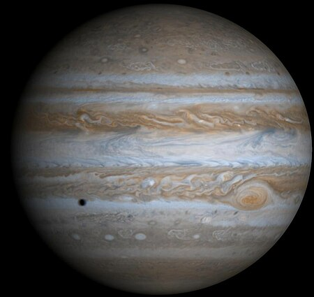

Jupiter ist mit einem Äquatordurchmesser von rund 143.000 Kilometern der größte Planet des Sonnensystems. Mit einer durchschnittlichen Entfernung von 778 Millionen Kilometern ist er von der Sonne aus gesehen der fünfte Planet. Er ist nach dem römischen Hauptgott Jupiter benannt. Der Planet hat – wie auch Saturn, Uranus und Neptun – keine feste Oberfläche. Die schon im kleinen Fernrohr sichtbaren, fast parallelen Streifen sind farbige Wolkenbänder. Aufgrund seiner chemischen Zusammensetzung zählt Jupiter zu den Gasplaneten. Diese „Gasriesen“ bilden im Sonnensystem die Gruppe der äußeren Planeten; sie werden auch als jupiterähnliche (jovianische) Planeten bezeichnet. In dieser Gruppe ist Jupiter der innerste Planet; er läuft jenseits des Asteroidengürtels um die Sonne. Bis 1980 kannte man 16 Monde, darunter 6 mit nur etwa 20 km Durchmesser. Die Voyager-Raumsonden der 1980er-Jahre entdeckten über 40 weitere Satelliten; seit 2023 sind 95 Monde bekannt.[4][5] Die vier größten sogenannten Galileischen Monde Ganymed, Kallisto, Io und Europa haben Durchmesser zwischen 5262 und 3122 km und wurden bereits 1610 entdeckt.
 1 2 3 4 56
7 8 9